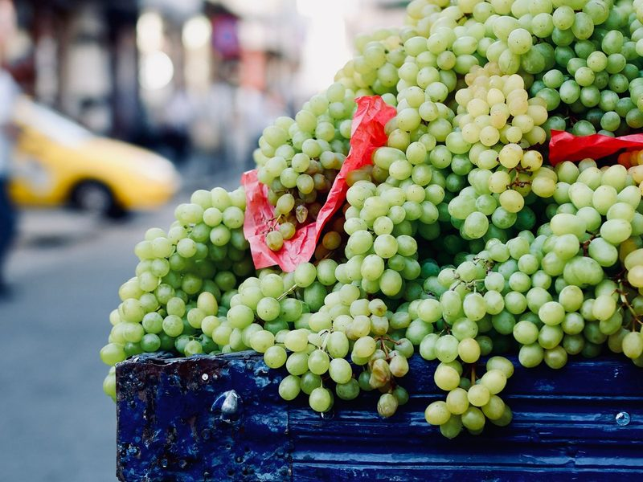

UNIT 22 · VOCABULARY
G 開頭（二）
G-II
33 個單字聽・唸・用
本單元單字一覽
WORD UP「G-II」的 33 個字（golden 到 gym）。紅色＝要複習，藍色標籤＝WORD UP 標熟記、還要在這裡考對。
goldengolfgoodgood-byegoosegovernmentgradegramgrandgranddaughtergrandfathergrandmothergrandsongrapegrassgraygreatgreedygreengreetgroundgroupgrowgrowthguardguavaguessguestguideguitargunguygym
每個字都有 🔊，先聽發音、跟著唸，再看例句。
單字 1–4

golden
金色的；金的adj.
She has golden hair.
她有一頭金髮。
她有一頭金髮。

golf
高爾夫球n.
My uncle plays golf on weekends.
我叔叔週末打高爾夫球。
我叔叔週末打高爾夫球。

good
好的adj.
She is good at math.
她擅長數學。
她擅長數學。

good-bye
再見interj.
Say good-bye to your friends.
跟你的朋友說再見。
跟你的朋友說再見。
單字 5–8

goose
鵝n.
There are three geese on the farm.
農場上有三隻鵝。
農場上有三隻鵝。

government
政府n.
The government built a new park.
政府蓋了一座新公園。
政府蓋了一座新公園。

grade
年級；成績n.
I'm in the eighth grade.
我讀八年級。
我讀八年級。

gram
公克n.
I need 200 grams of sugar.
我需要 200 公克的糖。
我需要 200 公克的糖。
單字 9–12

grand
雄偉的；盛大的adj.
We stayed at a grand hotel.
我們住在一家豪華的飯店。
我們住在一家豪華的飯店。

granddaughter
孫女；外孫女n.
Grandpa loves his granddaughter.
爺爺很疼他的孫女。
爺爺很疼他的孫女。

grandfather
祖父；外祖父n.
My grandfather is eighty.
我爺爺八十歲。
我爺爺八十歲。

grandmother
祖母；外祖母n.
My grandmother tells great stories.
我奶奶很會說故事。
我奶奶很會說故事。
單字 13–16

grandson
孫子；外孫n.
Her grandson is a doctor.
她的孫子是醫生。
她的孫子是醫生。

grape
葡萄n.
I bought a bunch of grapes.
我買了一串葡萄。
我買了一串葡萄。

grass
草；草地n.
Keep off the grass.
請勿踐踏草地。
請勿踐踏草地。
gray
灰色的；灰色adj./n.
The sky is gray today.
今天天空灰灰的。
今天天空灰灰的。
單字 17–20
🌟
great
很棒的；偉大的adj.
That's a great idea!
那是個好主意！
那是個好主意！
greedy
貪心的adj.
Don't be greedy. Share with others.
不要貪心，跟別人分享。
不要貪心，跟別人分享。

green
綠色的；綠色adj./n.
The traffic light turned green.
紅綠燈變綠燈了。
紅綠燈變綠燈了。

greet
問候；迎接v.
The teacher greeted us at the door.
老師在門口迎接我們。
老師在門口迎接我們。
單字 21–24

ground
地面；場地n.
The ball fell to the ground.
球掉到地上。
球掉到地上。

group
團體；組n.
We worked in groups of four.
我們四人一組。
我們四人一組。
grow
生長；種植；變得v.
What do you want to be when you grow up?
你長大想做什麼？
你長大想做什麼？
📈
growth
成長n.
Milk is good for children's growth.
牛奶對兒童的成長有益。
牛奶對兒童的成長有益。
單字 25–28
guard
警衛；守衛n./v.
The guard stands at the gate.
警衛站在大門口。
警衛站在大門口。

guava
芭樂n.
Guavas are popular in Taiwan.
芭樂在台灣很受歡迎。
芭樂在台灣很受歡迎。
🤔
guess
猜v./n.
Guess what! I won the prize.
你猜怎麼著！我得獎了。
你猜怎麼著！我得獎了。

guest
客人n.
We have guests for dinner tonight.
我們今晚有客人來吃晚餐。
我們今晚有客人來吃晚餐。
單字 29–32

guide
導遊；引導n./v.
Our tour guide speaks three languages.
我們的導遊會說三種語言。
我們的導遊會說三種語言。

guitar
吉他n.
He plays the guitar very well.
他吉他彈得很好。
他吉他彈得很好。
🔫
gun
槍n.
The police officer has a gun.
那位警察有配槍。
那位警察有配槍。
guy
傢伙；人n.
He is a nice guy.
他是個好人。
他是個好人。
單字 33–33
gym
體育館；健身房n.
We have PE class in the gym.
我們在體育館上體育課。
我們在體育館上體育課。
重點整理
| 說法 | 中文 | 例子 |
|---|---|---|
| be good at | 擅長 | be good at drawing |
| grow up | 長大 | I grew up in Tainan. |
| grow / growth | 生長（動詞）／ 成長（名詞） | Plants grow. ／ fast growth |
| guest / guess | 客人 ／ 猜 | invite guests ／ guess the answer |
| goose → geese | 鵝的複數 | two geese |
| grandfather / grandson | 祖父 ／ 孫子 | my grandfather and his grandson |
| in the + 序數 + grade | 讀幾年級 | in the seventh grade |
good-better-best：good 的比較級 better、最高級 best。
快問快答：中文 → 英文
1金色的；金的golden
2好的good
3鵝goose
4年級；成績grade
5雄偉的；盛大的grand
6祖父；外祖父grandfather
7孫子；外孫grandson
8草；草地grass
快問快答：英文 → 中文
1great很棒的；偉大的
2green綠色的；綠色
3ground地面；場地
4grow生長；種植；變得
5guard警衛；守衛
6guess猜
7guide導遊；引導
8gun槍
學完了！接下來
複習方法
review
- 回到「📗 單字卡」，按「遮中文」自己考自己
- 再按「遮英文」，看中文說出英文
- 每個例句跟著 🔊 唸一次
準備好了
- 按右上角「📝 前往測驗」
- 測驗錯的題目要訂正到全對
- 訂正完成補送 1 點